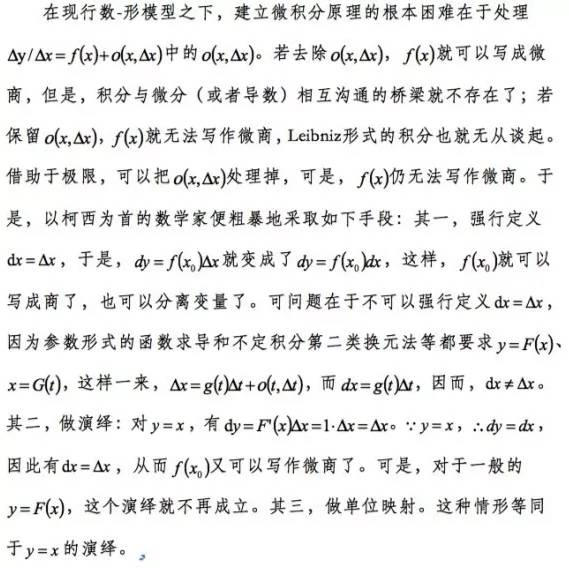

科技进步离不开基础科学的突破，因为基础科学可为解决工程技术领域的问题提供观和方法论，作为研究空间形式和数量关系的数学则是所有科学的基础。
微积分是数学的重要分支，冯·诺依曼说：“微积分是近代数学中最伟大的成就，对它的重要性做怎样的估计都不会过分。”恩格斯说：“在一切理论进步中，同17世纪下半叶发明微积分比较起来，未必再有别的东西会被看作人类精神如此崇高的胜利。”
自2009年我国数学家丁小平先生系统整理了三十年的研究成果，2011年他将《浅谈现行微积分原理的错误》和《新微积分原理简介》两篇论文递交给第四届世界数学科学大会(Fourth International Conference on Mathematical Sciences ，ICM(2012))，2012年3月受邀在大会上宣读论文；2015年起，《前沿科学》陆续发表了他的《浅谈现行微积分原理的错误》、《略论作为微积分原理的完善的实变函数》、《微分之讲授》等文章。2018年，《中国科学报》以《由“数学大国”向“数学强国”迈进始于重视数学》为题，对丁小平先生的研究成果及事迹进行了报道。
到目前为止，在了解他学术结论的数学家中，还没有人能指出其观点在逻辑或依据使用上存在哪些错误。按照有条件怀疑原则，科学家有责任评价其他科学家的研究成果，也要允许别人对自己的成果的怀疑，这不仅有利于避免出现“宝玉而题之以石，贞士而名之以诳”现象，也是践行科学家精神的题中应有之意。
青年作为社会变革中最新锐而敏感的群体，是标志时代的最灵敏的晴雨表。我们采访了中国科学院科学史博士研究生周芃君和中国科学院基础数学博士研究生周永亮，听一听青年人怎么看待丁小平先生的研究成果。
问：近四百年科学技术的实践证明，微积分是无懈可击的，怎么会错呢？
答：微积分是微积分原理和微积分方法的总称。微积分方法是先被揭示的，这似乎有些奇怪，微积分方法诚如马克思所说：“通过肯定不正确的数学途径得出的正确的(尤其在几何上是惊人的)结果。”为此，我们就要弄清：第一，微积分方法为什么行之有效？第二，揭示微积分方法的正确途径是什么？第三，怎样揭示更多的微积分方法？回答这些问题的逻辑体系就是微积分原理。
牛顿和莱布尼兹在揭示微积分方法的同时就试图建立微积分原理，可是终其一生也没能实现。后来，以柯西为代表的数学家们建立起了微积分原理，就是今天人们所学的微积分原理。但该原理虽经黎曼等数学家完善，逻辑上仍不能自圆其说，进而制约人类科技的发展。
问：能否从科学史角度对微积分发展历程做一个简单的介绍？
答：牛顿和莱布尼兹在1665年和1673年，分别独自创建微积分方法体系，并建立各自的微积分原理，其结果是：微积分方法放之四海而皆准，但微积分原理始终不能自圆其说。在牛顿的微积分原理中，由于构造流数(即导数)的需要，牛顿人为地引入小量“o”，可是，当流数构造出之后，牛顿又觉得流数后“o”的组合项是个麻烦，于是，又人为地舍弃“o”项。逻辑学告诉人们，如果一个量无论多小都得引入，那它就不可以忽视；如果一个量小得可以忽视，那它就不必引入。据此，基督教北爱尔兰地区克罗因主教贝克莱嘲笑牛顿的“o”是幽灵。
在莱布尼兹的微积分原理中，莱布尼兹定义两个要多近就可以多近的变量的差为微分，微分的逐点累加就是积分(毋需区分不定积分与定积分)，积分的微化就是微分，导数就是因变量与自变量的微分之比。莱布尼兹微积分原理的不足在于说不清“要多近就可以多近”究竟是多近。当然，在微积分方法的揭示上，欧拉做得更多、更好。
沃利斯开创的极限论到十九世纪得以成体系。1821年和1823年，法国数学家柯西以极限论为工具分别出版了他的《分析教程》和《无限小计算教程概论》，以此为标志，人类建立起第一个微积分原理。后来，又经过黎曼、维尔斯特拉斯和达布等数学家的完善，我们现行的微积分原理宣布大功告成。柯西系的微积分原理本质上就是用极限论处理掉“o”项的牛顿系的微积分原理，但在解释不了丰富多彩的微积分方法为什么行之有效时又只好把莱布尼兹的微分拼凑进去。
可是，1875年数学家托梅对现行微积分原理提出挑战。继托梅的直尺函数之后，原点左右无限震荡函数和越接近原点越无限次震荡的衰减函数等相继登场，此后，微积分原理再次陷入危机之中。如果我们称贝克莱对牛顿的质疑为微积分原理的第一次危机的话，那么，这次危机称之为微积分原理的第二次危机。微积分原理第二次危机的化解是法国数学家勒贝格完成的，他在1902年的《积分，长度和面积》一文中提出两个核心思想，即后人所说的“勒贝格测度”和“勒贝格积分”。但丁小平先生说，勒贝格和贝尔等数学家的所谓“化解”仍然是立不住的。
问：丁小平认为现行微积分原理主要存在哪些问题？
答：丁小平先生指出，现行微积分原理存在三方面的问题：第一、存在错误；第二、依据不充分，细微之处问题甚多；第三、结构扭曲。先说第一个问题：
当然，还有使用张量完成这种转换的，但这同样是没有意义的。因为数学表达形式不改变事物本质，就像不用波函数而改用矩阵表达这并不改变微观客体的本质一样。如上错误引起的问题是多方面的，首先就导致微分方程和微分几何的逻辑困难。
第二、现行微积分原理的含糊是多方面的，以极限为例，在现行数-形模型之下，两个数或两个点只能无限接近，因此，极限的结果不存在。比如，正多边形随着边数无限增多的极限是圆，可现行数-形模型下没有圆，有的只是边无限缩短的正多边形。
第三、现行微积分原理在多元积分与多重积分问题上是含混的，除了恰当积分外，没有多元积分。但发展多元积分是必须的，因为解偏微分方程要靠多元积分。
以上是扼要说明，丁小平先生在《浅谈现行微积分原理的错误》(《前沿科学》2015(4))一文中有详细的论述。
问：有数学家说丁小平指出的不过是古典微积分原理的问题，这些问题在实变函数理论和现代分析那里早已解决。对此观点你们怎么看？
答：在《略论作为微积分原理的完善的实变函数》(《前沿科学》2016(4))一文中，丁小平先生作了专门的回答。这篇文章是发人深省的。举几个例子：
第一、丁小平指出测度论的错误。这事实上是掀翻了现代数学的基石。丁小平先生指出：“测度论的逻辑脉络是：区间及其对应的线段是有测度的，而代数数对应的点的测度为0，又因为区间及其对应的线段是由代数数对应的点和超越数对应的点构成的，所以，超越数对应的点就是测度的数学承担者。事实上，区间及其对应的线段不是由二者，而是由三者——代数数对应的点与超越数对应的点以及点与点的间隙共同构成的，勒贝格只排除代数数是测度的数学承担者，但却不知道与实数一样多的间隙存在，就武断地说超越数或其对应的点是测度的数学承担者，这样使用排除法是错误的。”丁小平先生接着指出：“现行实数从来就没填满过数轴，因为现行数和点都是无度量的，而数轴是有度量的，无度量的数或点不管多到何种程度，数轴都是有空隙的。因此，从这种武断出发的任何证明都是立不住的。数是不能有测度的，只有量才可以有测度。量是数的差，尽管量也要用数来表达。超越数对应的点与代数数对应的点在解析几何意义上没有任何不同，代数数承担不了测度，超越数也同样承担不了测度。”
前面我们说，微积分原理的第二次危机是由勒贝格测度及以之为依据的勒贝格积分解决的，既然勒贝格测度理论是立不住的，那么，问题是否解决了不是再清楚不过了吗？
第二、数学的历史而言，诚如丁小平先生所说：“分析数学，尤其是近代分析，从来就不像对数学史知之甚少的数学工作者所理解的那个样子，也从来不像当代数学教科书所写的那个样子。以S.D.泊松(S.D.Poisson，1781-1840)为代表的数学家从来就不同意以柯西提出的微积分原理，以亨利·庞加莱(H.Poincaré、F.Klein，1849-1925)等为代表的数学家从来就不同意实变函数理论。人们似乎忘记，‘庞加莱、克莱因和希尔伯特，是在19世纪和20世纪数学交界线上耸立着的三个巨大身影’，‘三个巨大身影’中的两个都反对的东西，竟然会向希尔伯特一边倒，个中就没有数学之外的原因在起作用吗？”这是不无道理的，就像张景中院士所说：“数学家也要吃饭、穿衣。”
贝克莱指出：“在某种错误的补偿中某些错误抵消其它错误，从而掩盖其中存在的漏洞。”19和20世纪之交就出了这样一位数学领袖，他就是希尔伯特。希尔伯特通过肯定康托定理，一下子就把千疮百孔的数学变成了完美的数学。丁小平先生说康托定理是错误的，他给出的证明十分简明：
假设A、B、C、D、E为无限集合，A=B+C+D，再设C=E，则E为A的真子集。A中的真子集C足以与E一一对应(有公理保证)，故而，E中再无元素可与B和D对应。这个简单的证明对无限集合和有限集合都适用。
丁小平先生接着指出：“只看到A与E中的元素是无限的，就在不加区分增长速度的情况下举出某一个对应方式，很不妥。这种观点的幼稚之处在于，因为E中具有无限多元素，所以，E就可以与(B+C+D)中的元素一一对应下去，可是，他们忘记了C与E是同步的无穷多，从而，B和D在E中再找不到对应项。”
问：能否简要说下丁小平在数学领域所做的工作及其主要意义？
答：第一、系统而深刻地揭示现行微积分原理的错误。首先，全面地指出现行微积分原理存在的错误和不足；其次，从数学史和科学方法论两方面指出为什么会发生这些错误；最后，在传统数-形模型条件下给出正确结果，以反衬的方式再次指出现行微积分原理确实错了。
如果真的能够静下心来想，会发现现行微积分原理的错误是比较初级的，但为什么它是世界最难的问题之一呢？这就好比相对论原理，不是发现难，而是坚信难，不是大家爱因斯坦谁敢第一个坚信呢？丁小平先生此项工作的意义在于把数学宝藏的大门打开了。
第二、丁小平先生按照持之有故言之成理的准则，向数学界宣布，实变函数体系错误很多，并且给出了从重建测度论角度重建实变函数的思路。丁小平先生曾经说过，他人单势孤，不想在微积分这个堡垒拿下来之前向实变函数宣战。可是，在传统数学家把战线引到这里时，他也不得不应战。他还指出柯西体系的实分析有错误，复分析也站不住脚。丁小平先生此项工作的意义在于把实变函数和复变函数理论引向正确的方向。
第三、重建数-形模型。丁小平先生指出现行实数体系以及点、线、面、体(当然也可以是希尔伯特所谓的“桌子、椅子、啤酒瓶”)是现行数学的数-形模型。一些数学工作者只知道其它科学需要数学模型，而不知道数学自身也是建立在模型基础之上的科学。
现行的数-形模型是存在逻辑缺陷的。举个例子，一个有A这一点，却没有下一点B(只要给出下一点B，AB两点间就可以插入第三点，B就不是下一点)的不间断的线。有了新的数-形模型，数学就可以在不存在逻辑缺陷的数-形模型基础上发展了。新的数-形模型将引发一场数学革命，从而引发整个科学的一场革命。
第四、重建新微积分原理。新微积分原理实现了数学上的点级描述，比如给出微分的数学承担者和导数的瞬时比形式、实现积分的逐点累加等等，其中解决微分的数学承担者问题不仅解决了数学自身的问题，也使得诸如虚位移原理等自然科学的核心问题得以解决。新微积分原理的建立，必将引发微分几何、微分方程、复变函数和泛函分析等学科的迅猛发展。新微积分原理还修正了现行微积分体系结构的扭曲，省略了繁琐迂回的推理，在新微积分原理中微分就是对某区间的点级微化，积分是对点级微化结果的累加，微分与积分互为逆运算，并不存在本质不同的定积分和不定积分，导数就是微商，极其简单易学。这对我国的高等数学教育，以及科技人才的培养有重要意义。
李克强总理多次呼吁解决我国数学卡科学的脖子问题，主要问题出在哪儿？了解自然科学和工程技术前沿问题的科研工作者都知道，就出在微分方程的求解上，新微积分原理可在这方面提供方便。
问：究竟什么样的微积分才是满足要求的？
答：概言之，现行微积分原理所做的是回答微积分方法行之有效，而不是回答微积分方法为什么行之有效。事实上，实践是检验真理的根本标准，近四百年的科学技术实践早已回答了微积分方法是否行之有效的问题，不需要一个在理论上再随声附和的微积分原理。满足要求的微积分原理必须回答“通过肯定是不正确的数学途径得出了正确的(尤其在几何上是惊人的)结果”的微积分方法为什么行之有效，还要能优化已有微积分方法，并揭示更多微积分方法。
有的数学家肯定丁小平先生指出了现行微积分原理的错误，但是认为意义有限。他们说：“微分错了微积分教材就把它删了，微积分课可以照讲。”这些数学家忽略了微积分方法和原理的区别、导数是瞬时比但却写不成瞬时比的形式的缺陷、数学自身存在的根本价值等。十八世纪初到十九世纪末是数学与自然科学交织在一起的突飞猛进的发展时期，以欧拉、拉格朗日、拉普拉斯、勒让德、傅里叶、高斯、泊松、哈密顿等为代表的科学家，几乎都是精通数学、一般力学、固体力学、流体力学、天体力学、热力学、物理学等的通才，他们又几乎都是拒斥柯西微积分原理的。正是这个原因，这些年自然科学中所使用的微积分方法普遍沿用莱布尼兹的“无穷小量”、“微分”、“导数(微商)”和约翰。贝努力的“变分”等工具，不仅如此，即使时至今日，这些东西还都在继续沿用着。现实要求微积分原理对这些微积分方法行之有效的机理加以说明，而不是通过削足适履的手段阉割事实，更不是通过涂抹掉无穷小、微分及变分广泛使用的科学历史来为一个不称职的微积分原理的存在创造条件。
当今的数学工作者的历史使命是重建满足客观需求的微积分原理，新的微积分原理不仅要讲明现实中丰富的微积分方法行之有效的基本机理，而且，还要能阐释自1665年牛顿创建微积分原理以来与自然科学交织在一起的微积分方法的细枝末节的正确以及不足的原因。只有满足这些要求的微积分原理才是够格的。对此问题，丁小平先生在《人类究竟需要什么样的微积分原理》做了详尽的回答。
问：如何看待丁小平成果尚未得到鉴定问题，能否从科学史角度谈谈对于科研成果、评定人才评价标准的看法？
答：毛泽东主席曾指出：“历史上新的正确的东西，在开始的时候常常得不到多数人承认，只能在斗争中曲折地发展。正确的东西，好的东西，人们一开始常常不承认它们是香花，反而把它们看作毒草。哥白尼关于太阳系的学说，达尔文的进化论，都曾经被看作是错误的东西，都曾经经历艰苦的斗争。”可是，时代在进步，可不可以把误认作毒草的时间缩短些？可不可以少些科学迷信、科学傲慢和嫉贤妒能？布鲁诺、阿贝尔、伽罗华、陆家羲的悲剧不能再重演了。
上世纪八十年代是精英教育的时代，丁小平先生在那个时代就考取清华大学工学硕士研究生、中央民族学院哲学硕士研究生和北京大学理学硕士研究生。他的同学现在大多已是科学技术带头人了，其中不乏院士，有的还同时是北美某国科学院院士、工程院院士、欧洲科学与艺术院院士、欧洲科学院院士，这样的外籍院士对丁小平先生的学问都赞叹不已。丁小平先生不仅在数学领域有开创性成就，在一般哲学、马克思主义、心理学、美学、管理学、物理学、红楼梦学、现代中医学等也有着开创性的成果，我所知道的他指导的博士研究生和博士后不下二十个研究方向。他义务教学近二十多年，从来没有收取过学生一分钱，不管是品德还是学问，丁小平先生都是出类拔萃的。
我们还是些很幼稚的学生，没有资格做科学裁判，甚至我们的看法可能还是偏见。我们的看法都不重要，重要的是学术界和社会能够真正落实“深化三评”、“破除四唯”等文件精神，早日把丁小平先生的研究结论进行鉴定。石耶？璞耶？自然见分晓。
本文原刊载于中国西部科技2020年1月中19卷第2期（总第391期）第227-228页。
本页共114段，7300个字符，19017 Byte(字节)
？